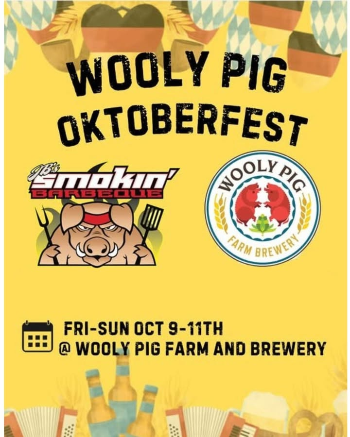

Weekend 2 food: JB's Smokin' Barbeque. will be here all weekend with brats, kraut, pierogies, balogna sandwiches and more! On Saturday only, Chef Mike will be working his hot pretzel magic--it's a good show and sooooo delicious! Guten Appetit!! #pretzelmagic #bratsandbeer #bratsnotbrats #festbieristhebestbier @Visit Coshocton, Ohio! @visitcoshocton@jbs_smokinbbq Ohio Craft Beer Northeast Ohio Craft Beverage News